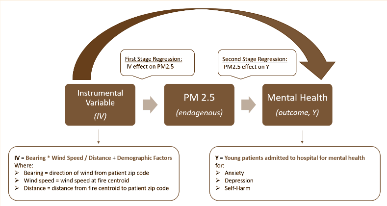
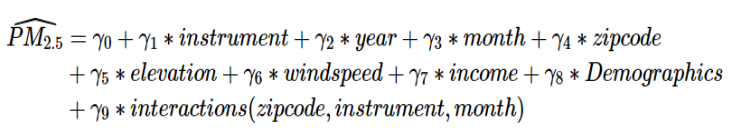
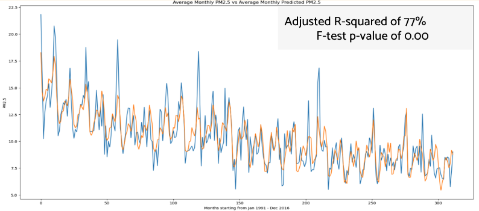

Motivation
Fires in California have become a major public safety and public health concern. Effects of wildfires on physiological health are well documented but there is little research that investigates and quantifies the causal effect of wildfires on mental health.
Our mission is to understand the impact of wildfires on youth mental health to help public health officials and medical practitioners design better disaster responses that anticipate mental health needs in children after fires.
Below: Cumulative Acres Burned by Wildfires since 1991

Data
Our research focused on specific mental health related diagnosis categories encompassing anxiety, depression and self-harm for children under age 19.
Data |
Source |
Rationale |
|---|---|---|
Mental Health Outcomes |
CA Department of Healh Care Access and Information |
Hospital visits for patients under 19 with medical diagnosis codes (anonymized), second stage outcome variable |
California Wildfire Perimeters |
CalFire |
Wildfire data used in instrumental variable to calculate areas exposed to smoke and PM2.5 |
Air Pollution |
University of Washington, Environmental Protection Agency |
PM2.5 amount is our first stage outcome variable |
Wind Speed and Direction |
NASA |
Wildfire smoke exposure is subject to wind direction. |
Socioeconomic Factors |
US Census |
Percent population by age, education level, mean and median income |
Methodology
A simple approach would be to use a baseline OLS model, but due to unobserved factors not captured by our data, any estimates from this approach would be biased. Instead, we used a 2 stage least squares regression model to estimate causal effects.
For the first stage model, we engineered a feature, or instrumental variable (IV), to predict PM2.5 across California zip codes over time. The IV is a function of wind direction and wind speed from a zip code to a wildfire, and controls for demographic factors like household income and population characteristic. There are two important assumptions for the IV: the instrument has a causal effect on the outcome variable (PM2.5), and the instrument affects medical diagnosis rates ONLY through PM2.5.
For the second stage model, we use the estimates of PM2.5 derived from the first stage to estimate the causal effects on youth mental health diagnosis (outcome variable), which includes patients under age 19 diagnosed with anxiety, depression, or self-harm.
Results
Stage 1 Model
Our goal for the stage one model was to predict PM2.5 using an instrumental variable. Below we can see the OLS model predictions (orange) mostly follow the actual values (blue) and the adjusted R-squared value is 0.77. Interaction terms were crucial to the model's ability to follow the spikes in PM2.5.

Stage 2 Model
Our stage 2 models by mental health diagnosis category showed there is a causal effect of PM2.5 on mental health diagnosis in children. The effects were similar across the three categories and magnitude of the effect varied by geography.
Mental Health Outcome |
Impact of PM2.5 |
95% CI |
Model Metrics |
|---|---|---|---|
Anxiety |
0.084 |
[0.02, 1.4] |
F-statistic: 35.58, Prob (F-statistic): 0.00, R-squared: 70% |
Depression |
0.071 |
[0.02, 1.3] |
F-statistic: 24.04, Prob (F-statistic): 0.00, R-squared: 62% |
Self-Harm |
0.063 |
[0.01, 1.2] |
F-statistic: 21.7, Prob (F-statistic): 0.00, R-squared: 58% |
Below: Interactive map of zip codes where PM2.5 had a postive, statistically significant causal effect on mental health diagnosis rate. Hover to see breakdown by anxiety, depression, and self-harm diagnosis.